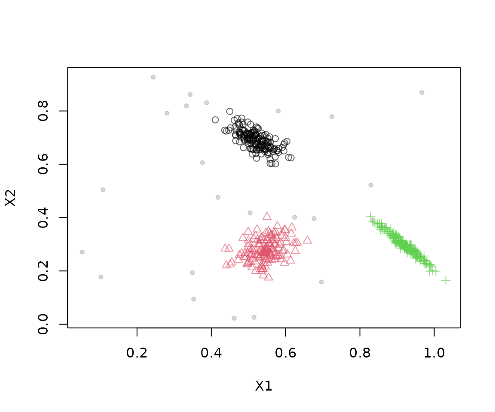
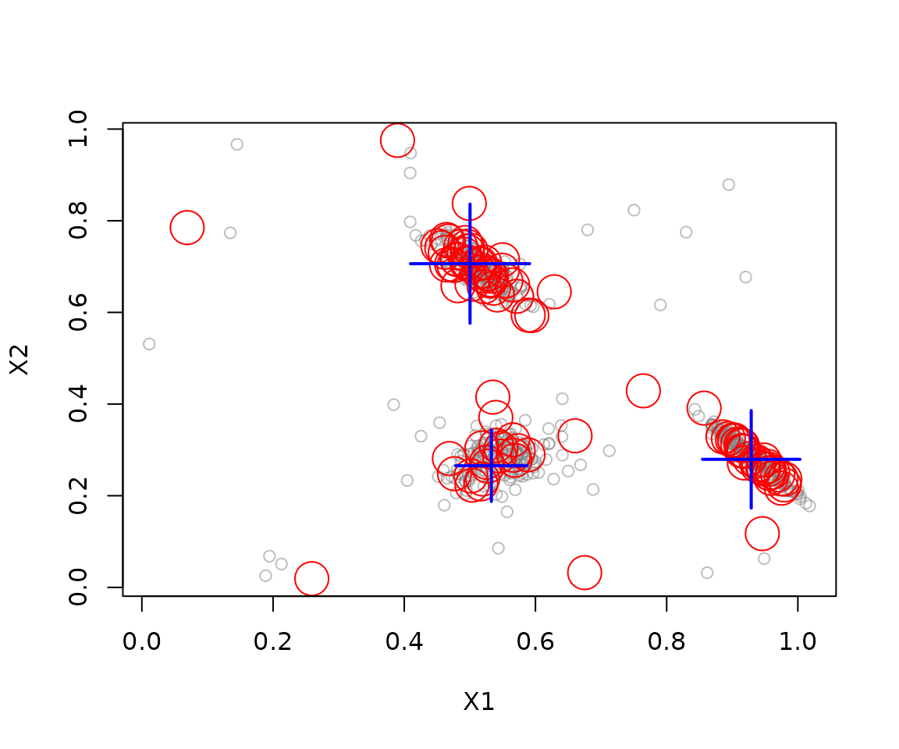

The stream package provides tools to generate or read
data streams, update stream mining models, and inspect their results.
This guide walks through a small clustering workflow: create a stream,
inspect incoming points, build a clustering model, and evaluate it on
new points.
Installation
Install the released package from CRAN, then load it in your R session:
install.packages("stream")Create and inspect a data stream
DSD_Gaussians() generates a stream with three clusters
and a small amount of noise. A stream can be unbounded, so request a
finite number of points with get_points():
stream <- DSD_Gaussians(k = 3, d = 2, noise = 0.05)
points <- get_points(stream, n = 5)
points
#> X1 X2 .class
#> 1 0.5458535 0.6891478 1
#> 2 0.5751342 0.3031995 2
#> 3 0.5070179 0.2583102 2
#> 4 0.5436979 0.3234242 2
#> 5 0.6294917 0.2378384 2The returned data frame contains feature columns and information
columns such as .class, which records the generating
cluster. Use info = FALSE when you only need feature
values. Plot a sample of the stream to see its structure:
plot(stream, n = 500)
Update a clustering model
DSC_TwoStage() combines an online micro-clusterer with
an offline macro-clusterer. Here, a sliding window stores recent points
and k-means groups the window’s micro-clusters into three
macro-clusters. update() feeds 500 points from the stream
into the model:
clustering <- DSC_TwoStage(
micro = DSC_Window(horizon = 100),
macro = DSC_Kmeans(k = 3)
)
update(clustering, stream, n = 500)
clustering
#> Sliding window + k-Means (weighted)
#> Class: DSC_TwoStage, DSC_Macro, DSC
#> Number of micro-clusters: 100
#> Number of macro-clusters: 3Inspect the number of clusters and their centers, then plot the result:
nclusters(clustering, type = "micro")
#> [1] 100
nclusters(clustering, type = "macro")
#> [1] 3
get_centers(clustering, type = "macro")
#> X1 X2
#> 1 0.9289433 0.2794326
#> 2 0.5328247 0.2655636
#> 3 0.5002698 0.7062714
plot(clustering, stream, type = "both")
Evaluate on new points
evaluate_static() tests the current model on new points
without updating it. The generated stream includes true cluster labels,
so external measures such as purity and the adjusted Rand index can be
calculated:
evaluate_static(
clustering,
stream,
measure = c("purity", "crand"),
n = 200,
type = "macro",
assign = "macro"
)
#> Evaluation results for macro-clusters.
#> Points were assigned to macro-clusters.
#>
#> purity cRand
#> 0.9698455 0.9565454
#> attr(,"type")
#> [1] "macro"
#> attr(,"assign")
#> [1] "macro"Further reading
See the function reference and
the package vignettes for details on data generators, stream filters,
clustering methods, evaluation, and extending stream with
new components.